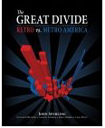

Center
for the Defense of Free Enterprise
Center
for the Defense of Free Enterprise
The Kerry Defeat
while stumping in your millionaire wife
HOME ISSUES OPPOSITION PROJECTS DEFENDERS WISE USE BOOKSTORE ARCHIVE
|
|
|
HOME ISSUES OPPOSITION PROJECTS DEFENDERS WISE USE BOOKSTORE ARCHIVE |
The Two Americas: Why did
Retro dump Metro at the polls?
Big money from the anti-big money party backfired
Perceived hypocrisy isn't everything in a presidential election, but by George it's nearly.
No one in Charleston or San Jose thinks that Republicans George W. Bush, Dick Cheney or Donald Rumsfeld promote anything that would harm the moneyed lives that they came from; they clearly and definitely advocate free enterprise and corporate capitalism.
On the other hand, Democrats Teresa Heinz Kerry, John Edwards and George Soros got a lot more money from the same system, and they seem intent on mocking, devaluing and even dismantling free enterprise - at least the other guy's free enterprise.
John Edwards got multimillion-dollar legal fees from his law practice.
Teresa Heinz Kerry controls a vast billion-dollar philanthropy empire that gives tons of money to anti-industry activists while flitting about in "The Flying Squirrel," her private Gulfstream V jet, named after her favorite ski-run in Sun Valley, near one of her four expensive homes.
Billionaire financier George Soros nearly destroyed the small depositors of Great Britain in 1992 by an aggressive speculation against the Pound Sterling that forced the Bank of England to withdraw the currency out of the European Exchange Rate Mechanism (which brought him a cool $1.1 billion) and he did the same thing to Malaysia in the 1997 Asian financial crisis. This is the same George Soros that fueled MoveOn.org and its "Dump Bush" campaign.
Why didn't it work? With all that money pouring out of people who complained that Bush supports big bad corporate capitalism, why isn't John Kerry the president-elect?
If you believe Chicago's Democrat Mayor Richard M. Daley,
the public could tell where the big money really was,
despite anything Dan Rather or Michael Moore said.
Mayor Daley was quoted in the Chicago Sun-Times as saying: "We always
thought that the Republican Party was Washington, DC. The Democrats are
Washington, DC politicians. They don't reach out to a mayor, a governor or the
state chairman. There's no local anymore."
Daley concluded, "If you watch the Republican Party, they're more grass roots
than Democrats. We think we are. The Republicans outfoxed the Democrats. They
became the party of precincts, a county, a city. Their strategy was to go to
the people, not to the money people...We're supposed to be the party of the
people. We're the party of the money."
If you believe Hollywood Monday-morning quarterbacks and the Los Angeles Times headline Stars rock the vote - in the wrong direction it was a backlash against celebrities with 8-figure incomes pretending to be populist political pundits. A foul-mouthed Whoopee Goldberg mixed with Tim Robbins rants turned toxic for Kerry, and even Bruce Springsteen's mass appeal only soured the Heartland on the "Hollywood elite." Yes, the movie and music industries' fundraising prowess gave Kerry's campaign a significant boost. But it also gave it a significant kick in the pants.
If you believe Victor Davis Hanson, senior fellow at the Hoover Institution, the media's clear anti-Bush bias backfired, too: "We are nearly reaching the point where approval from the New York Times or a CBS puff-piece hurts a candidate or cause, as do the billions in contributions from a George Soros."
Hansen suggests that TV media figures such as Bill Moyers, Andy Rooney and Ted Koppel have "morphed from their once sober and judicious personas into highly partisan figures that now carry political weight among most Americans only to the degree that they harm any cause or candidate with whom they are associated."
If you believe Republican get-out-the-vote meisters Karl Rove and Ken Mehlman, it was largely a matter of moral values.

Sperling wrote, "The existence of these two nations was dramatically thrust onto the American consciousness by the election of 2000; since that time there has been common reference to "Red states," which went to George W. Bush, and "Blue states," which went to Al Gore. Map 1-1, showing the results of the 2000 election, has become an iconic portrait of the political divide at the presidential level."

What separates these two Americas is economics, which Sperling seems to think determines beliefs. He wrote: "26 Red states have a consistently high percentage of gross state product (GSP) produced by agriculture, mining, nondurable goods and federal military and civilian facilities. In contrast, 24 Blue states rank high on durable goods manufacturing, finance, insurance, and services in general."
In a masterpiece of insult mistaken for analysis, Sperling explained his book title:
We chose the name "Retro" because the economies of the Red states tend to be dominated by the extraction industries and low-wage manufacturing and federal facilities; and because they are the home of old-fashioned values and the "Bible Belt," with its pro-life, anti-gay convictions and tendency to be more wedded to creationism than to science. We named the Blue states Metro America because they represent the Metropolitan areas that include both the historic industrial base and the "New Economy," new economic classes, a commitment to scientific innovation, and new ways of constructing the world.
Sperling never seemed to realize that Metro America's "new economic classes" still require three meals a day, and that their food and other material needs still come from those grungy old-fashioned extraction industries in Retro America.
Retro America has not forgotten that rather basic fact, nor which candidates are likely to help or harm extraction industries.
Actually, Red America in 2004 looks more like this map, created by NewsMax.com, which shows counties that gave George W. Bush more popular votes than any President in history.

Make of it what you will.
If you believe the late psychologist Abraham Maslow, it's because people who are too well-off forget what keeps them that way and people closer to the nitty-gritty don't.
Maslow attempted to understand how otherwise mentally healthy people could act to harm their own security and material support structure, like Sperling, who belittles the extraction industries that keep his belly full. Maslow had studied human motivation his entire career and found evidence that the things that motivate people can also get in their way.
Needs, perceived needs, make all the difference.
Everybody has needs, and Maslow found that these needs arise in a more or less predictable order in successful people, resulting in what he called a Hierarchy of Needs. As you'd expect, this "hierarchy" progresses from basic to high-level.
Here's a chart of how it works, according to Maslow. Ranked from primary material needs at the lowest rung, each need motivates powerfully until it is gratified, then a new higher level non-material need arises, which in turn fades when gratified, and so on up the hierarchy, which Maslow arranged thus at the end of his career:
Read from bottom up
|
Esthetics (need for beauty - to create beautiful things, have beautiful surroundings, live a beautiful life) |
|
Knowledge (cognitive needs, curiosity, need to understand) |
|
Self-actualization (ego need to be all that one can be) |
|
Sense of belonging (need to be part of something greater) |
|
Non-Material needs: Love (need for sex, family, closeness) |
|
Material Needs: Survival |
This might remain a mere theoretical curiosity except for Maslows discovery that
Then
Maslow identified this process as pathological and the most important feature of modern culture.
He gave it a clinical name:
Post-gratification forgetting and devaluation.
It is the most important feature of modern culture.
Post-gratification forgetting and devaluation helps us understand people who have the learned inability to see or appreciate the material needs and who mock, devalue and act to destroy them.
When whole segments of a culture are so well-off they can move all the way up the Needs Hierarchy, you get movements totally involved with the two highest-level needs, knowledge and beauty, and totally forgetful and destructive of the material needs.
Metro Blue America has forgotten its foundations.
Retro Red America lives close to its foundations.
People who are stuck in post-gratification forgetting and devaluation don't seem willing or able to learn from experience.
 If you
believe the left-wing Grist Magazine, the election results were an unmitigated
disaster for environmentalists.
If you
believe the left-wing Grist Magazine, the election results were an unmitigated
disaster for environmentalists.
A poll accompanied Grist's November 3, 2004 article, "Environmental leaders and thinkers on what comes next."
The poll offered five alternatives.
The vote shown is as of November 9, 2004.

It's going to be an interesting four years.
RETURN TO CENTER FOR THE DEFENSE OF FREE ENTERPRISE HOME PAGE
{kind=link}